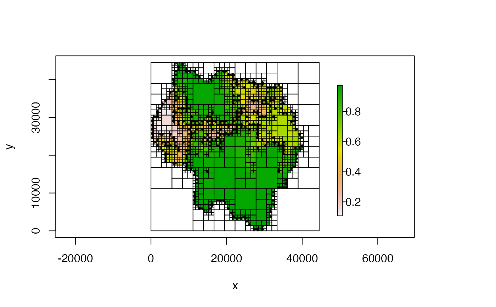
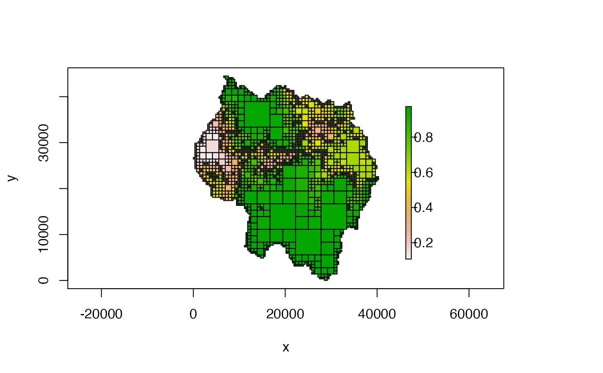
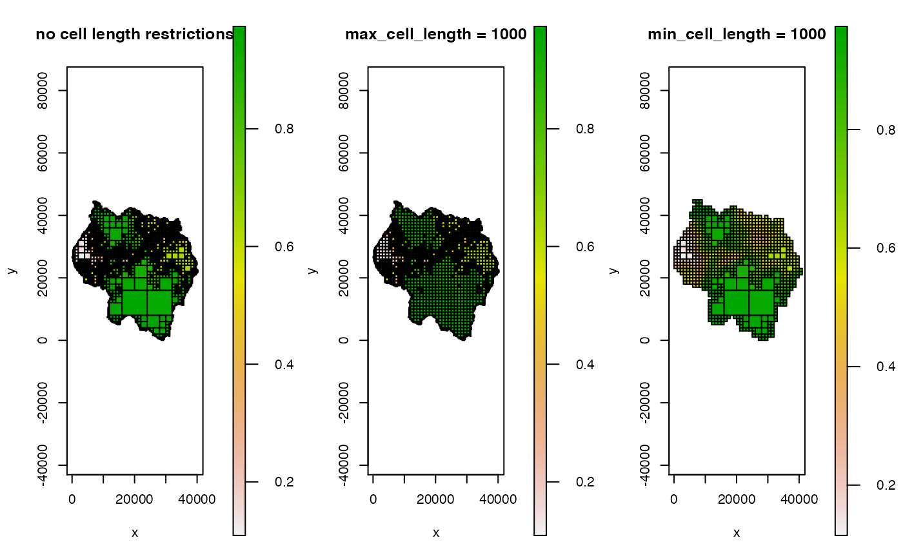
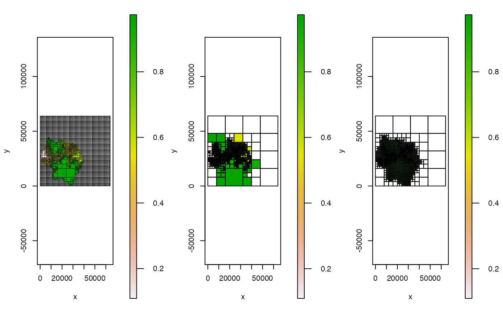
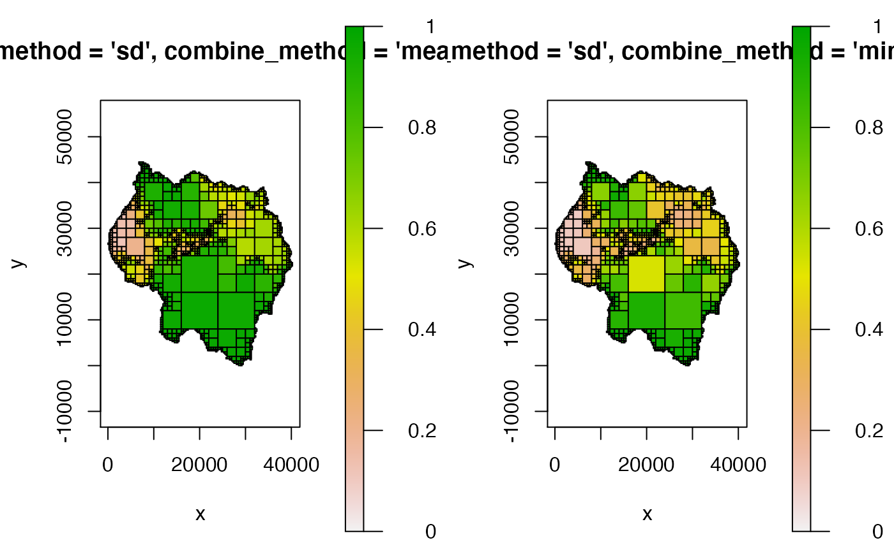
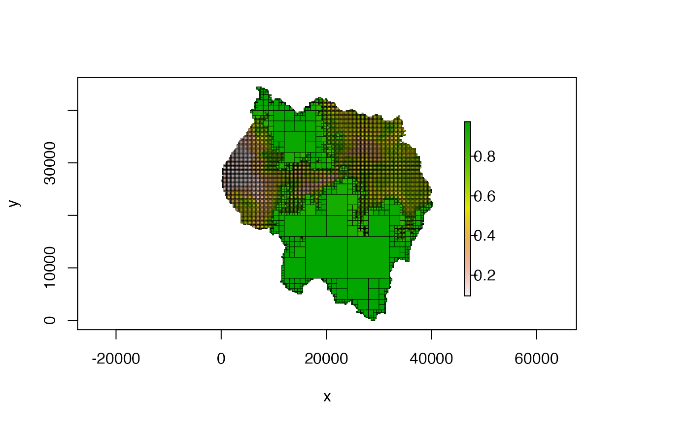
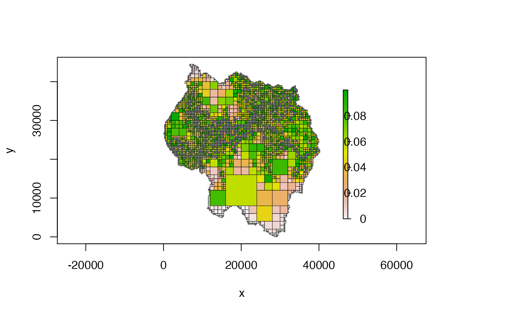
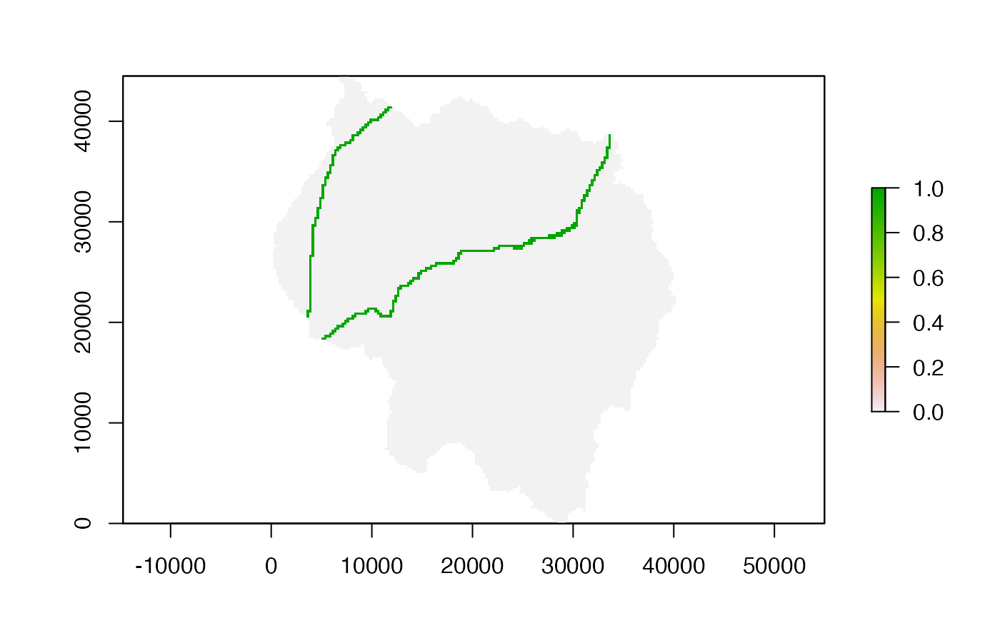
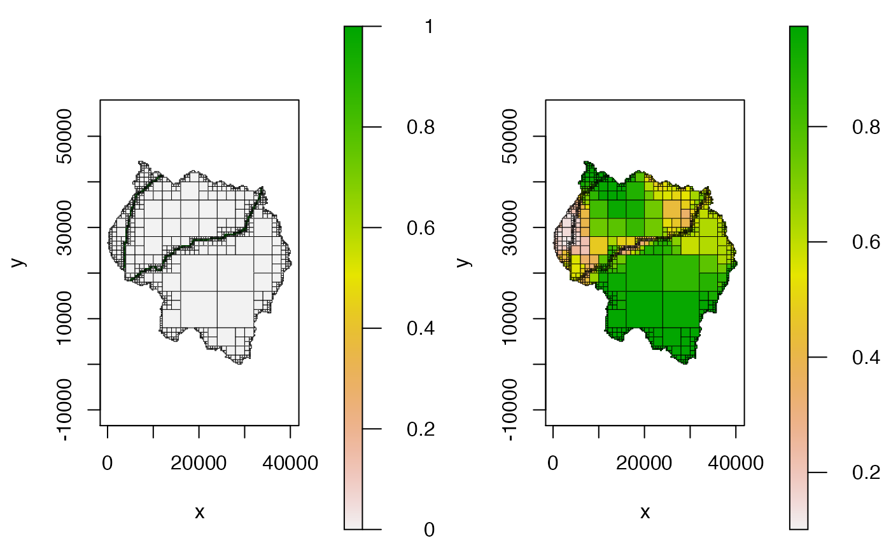

Create a Quadtree from gridded data
# S4 method for ANY quadtree( x, split_threshold = NULL, split_method = "range", split_fun = NULL, split_args = list(), split_if_any_NA = TRUE, split_if_all_NA = FALSE, combine_method = "mean", combine_fun = NULL, combine_args = list(), max_cell_length = NULL, min_cell_length = NULL, adj_type = "expand", resample_n_side = NULL, resample_pad_NAs = TRUE, extent = NULL, proj4string = NULL, template_quadtree = NULL )
Arguments
| x | a |
|---|---|
| split_threshold | numeric; the threshold value used by the split method
(specified by |
| split_method | character; one of |
| split_fun | function; function used on each quadrant to decide whether
or not to split the cell. Only used when |
| split_args | list; named list that contains the arguments needed by
|
| split_if_any_NA | boolean; if |
| split_if_all_NA | boolean; if |
| combine_method | character; one of |
| combine_fun | function; function used to calculate the value of a
quadrant that consists of multiple cells. Only used when
|
| combine_args | list; named list that contains the arguments needed by
|
| max_cell_length | numeric; the maximum side length allowed for a
quadtree cell. If |
| min_cell_length | numeric; the minimum side length allowed for a
quadtree cell. If |
| adj_type | character; one of |
| resample_n_side | integer; if |
| resample_pad_NAs | boolean; only applicable if |
| extent |
|
| proj4string | character; proj4string describing the projection of the
data. Only used when |
| template_quadtree |
|
Details
Overview of quadtree creation
A quadtree is created from a raster or a matrix by successively dividing
the raster/matrix into smaller and smaller cells, with the decision on
whether to divide a quadrant determined by a function that checks the cell
values within each quadrant and returns TRUE if it should be split,
and FALSE otherwise. Initially, all of the cells in the raster are
considered. If the cell values meet the condition determined by the
splitting function, the raster is divided into four quadrants - otherwise,
the raster is not divided further and the value of this larger cell is
calculated by applying a 'combine function' that aggregates the cell values
into a single value (for example, mean and median). If the given cell is
split, the process is repeated for each of those 'child' quadrants, and
then for their children, and so on and so forth, until either the split
function returns FALSE or the smallest possible cell size has been
reached.
Pre-creation dimension adjustment
If a given quadrant has dimensions that are not divisible by 2 (for
example, 5x5), then the process stops. Because of this, only rasters that
have dimensions that are a power of 2 can be divided down to their smallest
cell size. In addition, the rasters should be square. To create quadtrees
from rasters that have dimensions that are not a power of two and are not
square, two options are provided. The choice of method is determined by the
adj_type parameter.
In the 'expand' method, NA cells are added to the raster in order to create an expanded raster whose dimensions are a power of 2. The smallest number that is a power of two but greater than the larger dimension is used as the dimensions of the expanded raster. For example, if a raster has dimensions 546 x 978, NA cells are added to the top and right of the raster in order to create a raster with dimensions 1024 x 1024 (as 1024 is the smallest power of 2 that is also greater than 978).
In the 'resample' method, the raster is resampled in order to create a
square matrix with dimensions that are a power of two. If the data does not
have same number of rows and columns, resampling the raster to have an
equal number of rows and column will result in rectangular but non-square
cells. If square cells are desired, an additional step is added to make the
raster square by setting resample_pad_NAs to be TRUE (the
default). This is done in a way similar to the method described above. The
smaller dimension is padded with NA cells in order to equal the larger
dimension. For example, if the raster has dimensions 546 x 978, NA rows are
added in order to create a raster with dimensions 978 x 978. Then,
regardless of whether resample_pad_NAs is TRUE or
FALSE, the raster is resampled to a user-specified dimension
(determined by the resample_n_side parameter). For example, the user
could set resample_n_side to be 1024, which will resample the 978 x
978 raster to 1024 x 1024. This raster can then be used to create a
quadtree. resample_n_side should be a power of 2 (see above for an
explanation), although other numbers will be accepted (but will trigger a
warning).
If adj_type is 'none', the provided matrix/raster is used 'as is',
with no dimension adjustment.
Splitting and aggregating functions
The method used to determine whether or not to split a cell as well as the
method used to aggregate cell values can be defined by the user. Simple
methods are already provided, but custom functions can be defined. For
splitting a cell, two methods are provided. "range" checks the difference
between the minimum value and the maximum value within the quadrant - if
this difference exceeds split_threshold, the quadrant is split. "sd"
uses the standard deviation of the cell values within a quadrant - if the
standard deviation exceeds split_threshold, the quadrant is split.
Four methods to aggregate cell values are provided - "mean", "median", "min", and "max" - the names are self-explanatory.
Custom functions can be written to apply more complex rules to splitting
and combining. These functions must take two parameters: vals
and args. vals is a numeric vector of the values of the cells
within the current quadrant. args is a named list that contains the
arguments need by the custom function. Any parameters needed for the
function should be accessed through args. Note that even if no extra
parameters are needed, the custom function still needs to take an
args parameter - in that case it just won't be used by the function.
split_fun must return a boolean, where TRUE indicates that
the quadrant should be split. An important note to make is that
any custom function must be able to handle NA values. The function
must always return either TRUE or FALSE - if NA
is ever returned an error will occur.
For example, a simple splitting function that splits a quadrant when the variance exceeds a user-defined limit could be defined as follows:
splt_fun = function(vals, args) { if (any(is.na(vals))) { return(TRUE) } else { return(sd(vals) > args$var_limit) } }
Because the function makes use of an element of args named
var_limit, the split_args parameter would need to contain an
element called var_limit. For example:
qt = quadtree(rast, split_method="custom", split_fun=splt_fun,
split_args=list(var_limit=.05))
combine_fun must return a single numeric value. Unlike
split_fun, combine_fun is allowed to return NA values.
See Examples for an example of a custom combine function.
Note that the provided splitting and combining functions are written in C++. So while we could define an R function to perform splitting based on the range, the C++ version will run much faster. Custom R functions will run slower than the provided C++ functions.
Creating a quadtree using a template
This function also allows users to create a quadtree using another quadtree
as a "template" (via the template_quadtree parameter). The structure
of the new quadtree will be identical to that of the template quadtree, but
the values of the cells will be derived from the raster used to create the
new quadtree. The rasters used to make the template quadtree and the new
quadtree should have the exact same extent and dimensions - in addition the
exact same 'expansion method' (i.e. the method specified by
adj_type) should be used to create both quadtrees.
Other parameters
There are a few other parameters that control various aspects of the quadtree creation process.
The max_cell_length and min_cell_length parameters let the
user specify the range of allowable cell sizes. If max_cell_length
is not NULL, then the maximum cell size in the resulting quadtree
will be max_cell_length. This essentially forces any quadrants
larger than max_cell_length to split. The one exception is that a
quadrant that contains entirely NA values will not be split.
Similarly, the min_cell_length parameter can be used to define a
minimum side length for all cells, such that a quadrant cannot be split if
its children would be smaller than min_cell_length.
The split_if_any_NA and split_if_all_NA parameters control
how NA values are handled. If split_if_any_NA is TRUE
(the default), a quadrant will be split if any of the values are NA.
This ensures that rasters with irregular shapes maintain their shape in the
resulting quadtree representation. If FALSE, quadrants with
NAs are not automatically split - note that this can produce
unexpected results if the raster is irregularly shaped.
split_if_all_NA controls what happens when a quadrant consists
entirely of NA values. If FALSE (the default), these
quadrants are not split. If TRUE, these quadrants are automatically
split, which results in quadrants with all NA values being split to
the smallest possible cell size.
Examples
library(raster) # retrieve the sample data data(habitat) rast <- habitat ##################################### # using 'adj_type' ##################################### # create quadtree using the 'expand' method - automatically adds NA cells to # bring the dimensions to 128 x 128 before creating the quadtree qt1 <- quadtree(rast, split_threshold = .15, split_method = "range", adj_type = "expand") plot(qt1)# we can use 'crop = TRUE' and 'na_col = NULL' if we don't want to see the # padded NA's plot(qt1, crop = TRUE, na_col = NULL)# create quadtree using the 'resample' method - we'll resample to 128 since # it's a power of 2 # first we'll do it WITHOUT adding NAs to the shorter dimension, which # will result in non-square cells qt2 <- quadtree(rast, split_threshold = .15, split_method = "range", adj_type = "resample", resample_n_side = 128, resample_pad_NAs = FALSE) plot(qt2)# now we'll add 'padding' NAs so that the cells of the quadtree are square qt3 <- quadtree(rast, split_threshold = .15, split_method = "range", adj_type = "resample", resample_n_side = 128) plot(qt3)##################################### # using 'max_cell_length' and 'min_cell_length' ##################################### # we can use the 'max_cell_length' and 'min_cell_length' parameters to # control the maximum and minimum cell sizes qt4 <- quadtree(rast, split_threshold = .15, split_method = "range", max_cell_length = 1000, adj_type = "expand") qt5 <- quadtree(rast, split_threshold = .15, split_method = "range", min_cell_length = 1000, adj_type = "expand") par(mfrow = c(1, 3)) plot(qt1, crop = TRUE, na_col = NULL, main = "no cell length restrictions") plot(qt4, crop = TRUE, na_col = NULL, main = "max_cell_length = 1000") plot(qt5, crop = TRUE, na_col = NULL, main = "min_cell_length = 1000")par(mfrow = c(1, 1)) ##################################### # using 'split_if_any_NA' and 'split_if_all_NA' ##################################### # split quadrants with all NA values - this will result in NA quadrants being # split to the smallest possible cell size qt6 <- quadtree(rast, split_threshold = .15, split_method = "range", split_if_all_NA = TRUE) # don't force quadrants with NA cells to automatically split - note that this # can produce rather unexpected results (see the plot of qt7) qt7 <- quadtree(rast, split_threshold = .15, split_method = "range", split_if_any_NA = FALSE) # 'split_if_any_NA = FALSE' can be used in conjunction with 'max_cell_size' # to avoid tiny cells on the border of an irregularly shaped raster qt8 <- quadtree(rast, split_threshold = .15, split_method = "range", split_if_any_NA = FALSE, max_cell_length = 1000) par(mfrow = c(1, 3)) plot(qt6, border_lwd = .4) plot(qt7) plot(qt8)par(mfrow = c(1, 1)) ##################################### # using 'split_method' and 'combine_method' ##################################### # use the standard deviation instead of the range qt9 <- quadtree(rast, split_threshold = .1, split_method = "sd") # use the min to aggregate values rather than the mean qt10 <- quadtree(rast, split_threshold = .1, split_method = "sd", combine_method = "min") # compare the two quadtrees - note that their structures are identical par(mfrow = c(1, 2)) plot(qt9, crop = TRUE, na_col = NULL, zlim = c(0, 1), main = "split_method = 'sd', combine_method = 'mean'") plot(qt10, crop = TRUE, na_col = NULL, zlim = c(0,1), main = "split_method = 'sd', combine_method = 'min'")par(mfrow = c(1, 1)) ##################################### # using custom split and combine functions ##################################### # custom split function - split a cell if any of the values are below a given # value split_fun = function(vals, args) { if (any(is.na(vals))) { # check for NAs first return(TRUE) # if there are any NAs we'll split automatically } else { return(any(vals < args$threshold)) } } qt11 <- quadtree(rast, split_method = "custom", split_fun = split_fun, split_args = list(threshold = .8)) plot(qt11, crop = TRUE, na_col = NULL, border_lwd = .5)# custom combine function - if the mean of the values is less than # 'threshold', set the cell value to 'low_val'. If it's greater # than 'threshold', set the cell value to 'high_val' cmb_fun <- function(vals, args) { if (any(is.na(vals))) { return(NA) } if (mean(vals) < args$threshold) { return(args$low_val) } else { return(args$high_val) } } qt12 <- quadtree(rast, split_threshold = .1, split_method = "range", combine_method = "custom", combine_fun = cmb_fun, combine_args = list(threshold = .5, low_val = 0, high_val = 1)) plot(qt12, crop = TRUE, na_col = NULL)# note that the split and combine functions are required to have an 'args' # parameter, but they don't have to use it cmb_fun2 <- function(vals, args) { return(max(vals) - min(vals)) } qt13 <- quadtree(rast, split_threshold = .1, split_method = "range", combine_method = "custom", combine_fun = cmb_fun2) plot(qt13, crop = TRUE, na_col = NULL, border_lwd = .5)##################################### # using template quadtrees ##################################### # 'habitat_roads' has the exact same extent and resolution as 'rast' - it has # 1 where a road occurs and 0 otherwise data(habitat_roads) template <- habitat_roads plot(template)# we can use a custom function so that a quadrant is split if it contains any # 1's split_if_one <- function(vals, args) { if(any(vals == 1, na.rm = TRUE)) return(TRUE) return(FALSE) } qt_template <- quadtree(template, split_method = "custom", split_fun = split_if_one, split_threshold = .01) # now use the template to create a quadtree from 'rast' qt14 <- quadtree(rast, template_quadtree = qt_template) par(mfrow = c(1, 2)) plot(qt_template, crop = TRUE, na_col = NULL, border_lwd = .5) plot(qt14, crop = TRUE, na_col = NULL, border_lwd = .5)